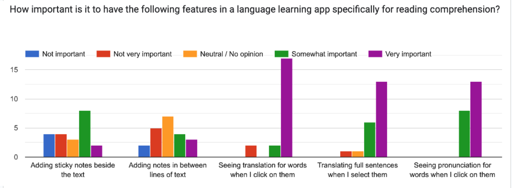
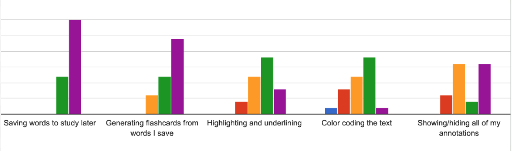
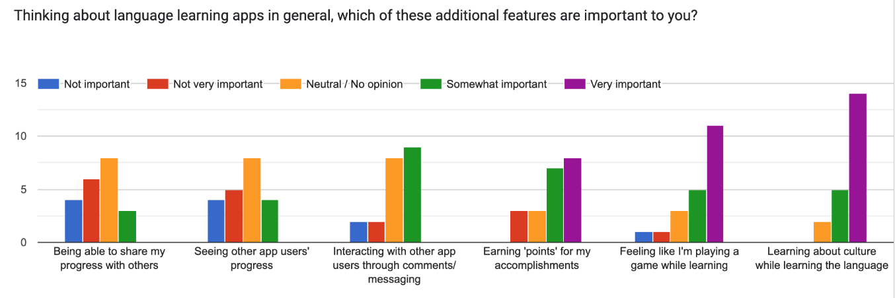

KnowNative
KnowNative is a web application for learners of traditional Chinese to improve their reading comprehension through studying native language texts. KnowNative is built in React, Node.js, Express.js and MongoDB. It also incorporates Google Cloud Translate API and OpenAI API.

Inspiration & Backstory
An idea born from a love for languages
As someone who has studied Japanese and traditional Chinese in both academic and self-study contexts, I am fascinated by the way people learn languages. While I took formal classes in both of my languages, I found that what truly accelerated my learning was diving into real world language by seeking out native speakers and native language materials for my study. I quickly moved away from dry textbook material and instead sought out books, articles and websites created by native speakers for native speakers to use as my primary study materials. Not only was I more engaged when studying from materials I was actually interested in, but I gained a sense of how the mechanics of the language worked in the real world, which gave me the confidence to travel around Japan and Taiwan and build deep, meaningful relationships with the people who lived there.
Solving a real learning problem
Attaining that degree of proficiency and confidence, however, required hours of pouring over articles and texts, copy-and-pasting every word I wanted to learn into a dictionary app and then again into a separate flashcard app to study from. This routine of extracting the vocabulary I needed from the articles I chose to read was tedious and time-consuming, and only delayed my progress and took my focus away from the actual material I wanted to learn. I wanted to recommend my approach to other learners, but I found that the actual process of learning was too cumbersome for most learners to bother with.
There has to be a better way!
Behind KnowNative is my drive to solve this problem — to provide an alternative to dry textbook readings by allowing learners to collect their own materials to learn from, while eliminating the need for using multiple different apps to study. With a simple and intuitive user interface packed full of functionality, KnowNative allows learners to keep their study materials all in one place, dynamically annotate their own texts, and automatically generate flashcards from their chosen words. One month ago, with this desire to put powerful study tools in the hands of other learners like myself, I set out to build KnowNative.

Development Steps
User Research
While KnowNative really is my own "dream study app", I know that I wanted to be able to share my product with other learners like myself. It was important to me to understand what others felt was important to see in a language learning app, and what features they felt were most valuable. With this in mind, I conducted a user research study to gather information on the preferences of other language learners. My user research survey recieved 21 responses.
When asked about their preferences in a language learning app for reading comprehension, respondees expressed most interest in generating flashcards, adding inline annotations and seeing sentence translastions. Adding notes alongside the text, as well as highlighting, underlining and color coding the text were less important.
When asked about features of language learning apps in general (not just for reading comprehension), language learners cared most about feeling like they're playing a game while learning, and learning about culture while studying the language.
  Planning & Early Development
When I began building KnowNative, I had only been learning React for about 2 weeks. I took a relatively conservative approach to planning the project, determined not to bite off more than I could chew for the 10 days I had to build the app and have it ready for my capstone presentation. At this early stage of planning, I was prioritizing the core feature of the app: importing a text and being able to click on words to see their meaning and save it as an inline annotation. My approach to building out this major feature would involve learning how to parse text into separate words, linking my app to a 3rd party dictionary or translation service, and coding out the functionality to save words to the database and render them to the page as annotations.
However, to my surprise I was able to build out this feature in just a couple days, leaving me with plenty of time to plan the other features I had only daydreamed about. Excited by how much I had been able to accomplish, I turned my attention to my "icebox" features: Full-sentence translations, automatically creating flashcards from saved words, and incoporating AI for generating easier versions of the user's imported texts.
Challenges
The unique challenges of working with traditional Chinese text
I am fascinated by the Chinese language and learning it has brought me so much joy and self-discovery over the years, so I chose this language as the first focus of my app. While I had considered building an app that could be used for any language, the Chinese language is complex and interesting, and it provides several unique challenges when coding with it.
One of the first challenges I faced in building KnowNative was being able to take a Chinese text and make individual words clickable to see their meaning and pronunciation. Chinese does not separate words using whitespace; this is not only a challenge for people learning the language but also makes it difficult for the application to tell one word from the next.
Luckily for me, some clever people who came before me have found a number of approaches to parsing Chinese text into words, and for my project I decided to incorporate the Chinese Tokenizer package, which links to the CC-CEDICT Chinese-English dictionary to parse text into words and make their meaning and pronunciation easily accessible. I was able to integrate this into my project and adjust the functionality for the specific needs of my program — making words clickable and using dictionary results for inline annotations and flashcards.
Generative AI for creating "easier" versions of texts
I recently discovered a small startup called Diffit, which uses generative AI to provide a tool for teachers to generate graded readings at different levels and languages. Inspired by this use of AI to generate learning materials, I knew that I wanted to integrate this technology in a similar way in my application.
With textbooks written for students, each reading is perfectly matched to the student's expected level. However, real native language materials can often be too difficult, and this can be discouraging for learners who are trying to move away from textbook study. I wanted to leverage generative AI technology in my app to allow readers to create an easier version of whatever it is they'd like to read, to help them feel more comfortable tackling more challenging readings.
I decided to integrate the OpenAI API in my project, with a simple prompt to generate an easier version of the selected text at a 5th-grade reading level. Currently, this feature provides a decent result about half the time; however, it often returns text that is either not appropriately graded or simply changes the text into simplified Chinese characters - despite the prompt specifying to only use traditional characters.
The OpenAI API gpt model used in this project does not have a customization option for other languages, and since its training is based on mostly English text, it falls short on accuracy with Chinese language input. Integrating this functionality was just a start toward building this valuable feature for users, and in the future I plan to replace this model with something more capable with foreign language texts.
Future Developments
KnowNative is still an evolving project, and I have exciting plans for its future!
- I have begun collaborating with a UX designer who will be conducting further user research to better understand the needs and preferences of target users. Additionally, we will be developing the interface design for a better overall user experience, with particular focus on making the app more accessible for first-time users.
- I am researching generative AI models to determine the best choice for my use case, and will be developing this feature for better customization options and improved accuracy of results.
- Ultimately, while I expect most users to be accessing KnowNative on a desktop device, I would like to develop a more responsive layout that will allow users to interact with the features of the app on smaller screens for on-the-go review.
Below is a video demonstration of the app, including a narrated walkthrough of app features as well as a brief discussion of the code.
Follow my progress on GitHub and take KnowNative for a test drive on the live site.